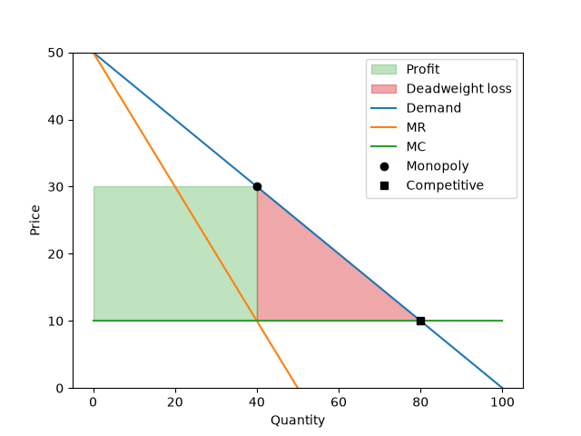
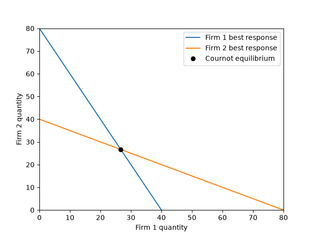
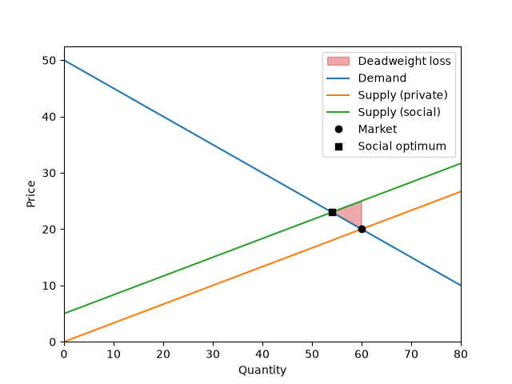
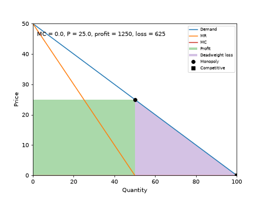
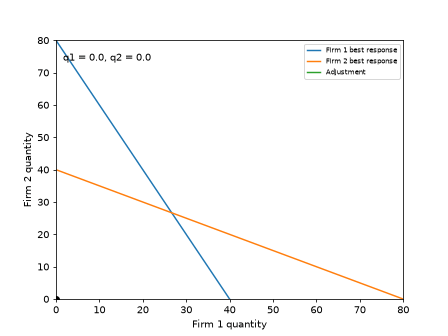

第 15 章: 不完全競争とゲーム理論¶
15.1 この章の地図¶
ここまでの市場は、企業が価格を決められない完全競争でした。この章では、企業が価格に影響を与える独占・寡占と、市場がうまくいかない外部不経済を扱います。企業どうしが互いの行動を読み合う状況は、ゲーム理論で表します。
| 項目 | 内容 |
|---|---|
| 経済学の題材 | 独占（MR = MC、死荷重）、寡占（クールノー均衡、囚人のジレンマ、ナッシュ均衡）、外部不経済とピグー税（マインドマップ 5-4） |
| 使う Python の機能 | タプルをキーにした辞書、繰り返しによる均衡の探索（第 5 章の復習）、TypedDict（テストの型）、第 7 章の関数の再利用 |
| 完成形 | monopoly_outcome、best_response、cournot_by_iteration、cournot_symmetric、duopoly_profits、pure_nash_equilibria、social_optimum_quantity |
| ファイル | 実装: lib/chapter15/externality.py、lib/chapter15/game.py、lib/chapter15/monopoly.py、lib/chapter15/oligopoly.py、lib/chapter15/plot.py（独占の図）／テスト: test/chapter15/test_externality.py、test/chapter15/test_monopoly.py、test/chapter15/test_oligopoly_and_game.py、test/chapter15/test_plot.py（自分で書くときは、practice/chapter15/ に、同じ名前で作ります） |
経済学の式とコードの対応¶
需要曲線 Q = 100 − 2P（逆需要曲線 P = 50 − Q ÷ 2）、限界費用は一定で 10 とします。
| 経済学 | 式 | コード |
|---|---|---|
| 限界収入 | MR = (a − 2Q) ÷ b（需要曲線の 2 倍の傾き） | marginal_revenue |
| 完全競争 | P = MC | competitive_quantity |
| 独占 | MR = MC で数量を決め、価格は需要曲線の上で決まる | monopoly_outcome |
| ラーナー指数 | (P − MC) ÷ P = 1 ÷ 価格弾力性 | lerner_index |
| クールノー競争 | 各社が、相手の生産量を所与として、利潤を最大にする | best_response、cournot_by_iteration |
| ナッシュ均衡 | 互いに、相手の選択に対して最適な組 | pure_nash_equilibria |
| 外部不経済 | 社会的限界費用 = 私的限界費用 + 外部費用 | social_optimum_quantity |
記号について: a・b は、第 1 章と同じ、需要曲線の切片と傾きです。A = a ÷ b、B = 1 ÷ b は、逆需要曲線 P = A − B·Q の切片と傾きです（第 13 章の A（独立支出）とは別）。n は企業の数です（第 8 章の n は、標本の大きさ）。e は 1 単位あたりの外部費用、q は企業 1 社の生産量です（Q は市場全体の数量）。一覧は、記号について を参照してください。
15.2 予想する¶
次の問いに、手計算で答えてください。
- 完全競争では、価格が限界費用 10 に等しくなります。数量はいくつですか
- 独占企業は、MR = MC の数量を選びます。MR = 50 − Q と MC = 10 から、数量と価格はいくつですか。完全競争より、高いですか、低いですか
- 同じ市場に、独占でなく、同じ費用の企業が 2 社いて、お互いの生産量を見ながら生産量を決めたら、合計の生産量は、独占と完全競争のどちらに近いでしょうか
15.3 ゲーム理論の用語¶
| 用語 | 意味 |
|---|---|
| 戦略 | 各プレイヤーが選べる行動 |
| 利得（ペイオフ） | 結果として各プレイヤーが得る値（利潤など） |
| ペイオフ行列 | 戦略の組ごとの、利得を並べた表 |
| 最適反応 | 相手の選択を所与としたときの、自分にとって最適な選択 |
| ナッシュ均衡 | 全員が、互いに、相手の選択に対して最適反応をとっている組 |
ペイオフ行列は、「(行の戦略, 列の戦略) → (行の利得, 列の利得)」の辞書で表します。
payoffs = {
("協力", "協力"): (3, 3),
("協力", "裏切り"): (0, 5),
("裏切り", "協力"): (5, 0),
("裏切り", "裏切り"): (1, 1),
}
15.4 プログラミング¶
独占¶
限界収入は、需要曲線の 2 倍の傾きです。逆需要曲線 P = 50 − 0.5Q の傾きが −0.5 なので、MR = 50 − Q の傾きは −1 です。
DEMAND = {"demand_intercept": 100, "demand_slope": 2}
def test_限界収入は需要曲線の2倍の傾き() -> None:
# 逆需要曲線 P = 50 - 0.5Q の傾きは -0.5。限界収入 MR = 50 - Q の傾きは -1
assert marginal_revenue(0, **DEMAND) == pytest.approx(50)
assert marginal_revenue(10, **DEMAND) == pytest.approx(40)
assert marginal_revenue(20, **DEMAND) == pytest.approx(30)
def test_独占の数量は40で価格は30() -> None:
result = monopoly_outcome(**DEMAND, marginal_cost=10)
assert result.quantity == pytest.approx(40)
assert result.price == pytest.approx(30)
def test_独占の数量では限界収入が限界費用に等しい() -> None:
result = monopoly_outcome(**DEMAND, marginal_cost=10)
assert marginal_revenue(result.quantity, **DEMAND) == pytest.approx(10)
def test_独占は完全競争より価格が高く数量が少ない() -> None:
result = monopoly_outcome(**DEMAND, marginal_cost=10)
assert result.price > 10
assert result.quantity < competitive_quantity(**DEMAND, marginal_cost=10)
def marginal_revenue(
quantity: float, demand_intercept: float, demand_slope: float
) -> float:
"""限界収入 MR = (a - 2Q) ÷ b。逆需要曲線 P = (a - Q) ÷ b の 2 倍の傾き。"""
check_slope(demand_slope, "需要曲線の傾き")
return (demand_intercept - 2 * quantity) / demand_slope
def competitive_quantity(
demand_intercept: float, demand_slope: float, marginal_cost: float
) -> float:
"""完全競争の数量: 価格が限界費用に等しくなる点の需要量。"""
_check_cost(demand_intercept, demand_slope, marginal_cost)
return demand_intercept - demand_slope * marginal_cost
@dataclass(frozen=True)
class MonopolyOutcome:
"""独占の結果。"""
quantity: float
price: float
profit: float
consumer_surplus: float
deadweight_loss: float
def monopoly_outcome(
demand_intercept: float, demand_slope: float, marginal_cost: float
) -> MonopolyOutcome:
"""MR = MC で数量を決め、価格は需要曲線の上で決まる。"""
competitive = competitive_quantity(demand_intercept, demand_slope, marginal_cost)
quantity = (demand_intercept - demand_slope * marginal_cost) / 2
price = inverse_demand(quantity, demand_intercept, demand_slope)
highest_price = choke_price(demand_intercept, demand_slope)
return MonopolyOutcome(
quantity=quantity,
price=price,
profit=(price - marginal_cost) * quantity,
consumer_surplus=0.5 * quantity * (highest_price - price),
deadweight_loss=0.5 * (competitive - quantity) * (price - marginal_cost),
)
第 1 章の choke_price と、第 7 章の inverse_demand を使って、需要曲線の縦軸の切片と、数量から価格を求める式を、新しく書かずに済ませています。傾きが 0 以下の需要曲線は、第 1 章の check_slope で、受け付けません。
MR = (100 − 2Q) ÷ 2 = MC = 10 から、Q = 40 です。価格は、需要曲線 P = (100 − 40) ÷ 2 = 30 の上で決まります。結果は、次のとおりです。
| 完全競争 | 独占 | |
|---|---|---|
| 数量 | 80 | 40 |
| 価格 | 10 | 30 |
| 消費者余剰 | 1600 | 400 |
| 企業の利潤 | 0 | 800 |
| 死荷重 | 0 | 400 |
完全競争の総余剰（1600）は、独占では、消費者余剰（400）、企業の利潤（800）、死荷重（400）に分かれます。消費者から企業に移った分（800）と、誰にも渡らず失われた分（400）があります。
独占と完全競争の違いは、図で見ると、すぐに分かります。

図の読み方:
- 青い線が需要曲線、オレンジの線が限界収入（MR）。MR は、需要曲線の2 倍の傾きで、数量 50 で 0 になる
- 緑の水平線が限界費用（MC = 10）。独占は、MR と MC が交わる点（数量 40）で数量を決め、価格は、その数量での需要曲線の上（30、黒い丸）で決まる
- 完全競争は、価格と MC が等しい点（数量 80、価格 10、黒い四角）。独占は、数量が半分で、価格が 3 倍
- 薄い緑の長方形が利潤（40 × 20 = 800）。赤い三角形が死荷重（0.5 × 40 × 20 = 400）。取引されなくなった分で、誰にも渡らない
テストでは、長方形の面積が利潤、三角形の面積が死荷重と一致することを確かめています。この図は、lib/chapter15/plot.py の plot_monopoly が描きます。
def test_完全競争の総余剰は独占の消費者余剰と利潤と死荷重の合計() -> None:
result = monopoly_outcome(**DEMAND, marginal_cost=10)
# 完全競争の消費者余剰: 底辺 80、高さ 50 - 10 = 1600
competitive = 0.5 * 80 * (50 - 10)
assert competitive == pytest.approx(1600)
total = result.consumer_surplus + result.profit + result.deadweight_loss
assert total == pytest.approx(competitive)
独占力の大きさ: ラーナー指数¶
独占点（価格 30、数量 40）での価格弾力性は、第 2 章の式（b × P ÷ Q）で 2 × 30 ÷ 40 = 1.5 です。ラーナー指数（P − MC）÷ P = (30 − 10) ÷ 30 = 2 ÷ 3 は、この弾力性の逆数と、ちょうど一致します。需要が非弾力的なほど、独占企業は価格を高くできます。
def test_ラーナー指数は価格弾力性の逆数に等しい() -> None:
result = monopoly_outcome(**DEMAND, marginal_cost=10)
# 独占点での価格弾力性は b × P ÷ Q = 2 × 30 ÷ 40 = 1.5
elasticity = 2 * result.price / result.quantity
assert lerner_index(result.price, marginal_cost=10) == pytest.approx(1 / elasticity)
assert lerner_index(result.price, marginal_cost=10) == pytest.approx(2 / 3)
def lerner_index(price: float, marginal_cost: float) -> float:
"""ラーナー指数 (P - MC) ÷ P。独占力の大きさで、独占では弾力性の逆数に等しい。"""
if price <= 0:
raise ValueError("価格は正でなければならない")
return (price - marginal_cost) / price
寡占: クールノー競争¶
2 社が、相手の生産量を所与として、自社の利潤を最大にする生産量を選びます。これが、最適反応です。相手の生産量が q2 のとき、自社の最適な生産量は、独占と同じ考え方で、q1 = 40 − 0.5 × q2 になります。
class Market(TypedDict):
demand_intercept: float
demand_slope: float
marginal_cost: float
MARKET: Market = {"demand_intercept": 100, "demand_slope": 2, "marginal_cost": 10}
def test_相手が生産しなければ最適反応は独占の数量40() -> None:
assert best_response(0, **MARKET) == pytest.approx(40)
def test_相手の生産量が増えると最適反応は減る() -> None:
# 最適反応 q = 40 - 0.5 × (相手の生産量)
assert best_response(20, **MARKET) == pytest.approx(30)
assert best_response(40, **MARKET) == pytest.approx(20)
def test_相手が非常に多く生産すれば最適反応は0() -> None:
assert best_response(100, **MARKET) == 0
TypedDict は、辞書に、「どんなキーがあり、値がどんな型か」を書く型ヒントです。**MARKET で関数に渡すときに、検査の道具（mypy）が、引数の名前と型を確かめられるようにするために使っています。実行には、影響しません（MARKET は、ふつうの辞書です）。
def best_response(
opponent_quantity: float,
demand_intercept: float,
demand_slope: float,
marginal_cost: float,
) -> float:
"""相手の生産量が与えられたときの、自社の利潤を最大にする生産量。
q = (A - MC - B × 相手の生産量) ÷ 2B（A = a/b、B = 1/b）。負にはならない。
"""
highest_price = choke_price(demand_intercept, demand_slope)
price_slope = 1 / demand_slope
quantity = (highest_price - marginal_cost - price_slope * opponent_quantity) / (
2 * price_slope
)
return max(quantity, 0)
ナッシュ均衡は、「互いが、相手の最適反応に対する最適反応になっている点」です。2 社が、交互に最適反応をとり続けると、第 5 章の調整過程のように、均衡に近づきます。
def test_2社のクールノー均衡は各社80_3で価格は70_3() -> None:
q1, q2 = cournot_by_iteration(**MARKET)
assert q1 == pytest.approx(80 / 3, abs=1e-6)
assert q2 == pytest.approx(80 / 3, abs=1e-6)
def test_均衡では互いが相手の生産量に対して最適反応をとっている() -> None:
q1, q2 = cournot_by_iteration(**MARKET)
assert best_response(q2, **MARKET) == pytest.approx(q1, abs=1e-6)
assert best_response(q1, **MARKET) == pytest.approx(q2, abs=1e-6)
def test_初期値が違っても同じ均衡に収束する() -> None:
q1, q2 = cournot_by_iteration(**MARKET, initial=(80, 0))
assert q1 == pytest.approx(80 / 3, abs=1e-6)
assert q2 == pytest.approx(80 / 3, abs=1e-6)
def test_収束しなければ例外になる() -> None:
with pytest.raises(RuntimeError):
cournot_by_iteration(**MARKET, max_iterations=1)
def cournot_by_iteration(
demand_intercept: float,
demand_slope: float,
marginal_cost: float,
initial: tuple[float, float] = (0.0, 0.0),
tolerance: float = 1e-9,
max_iterations: int = 1000,
) -> tuple[float, float]:
"""2 社が交互に最適反応をとり続けて、クールノー・ナッシュ均衡を求める。"""
q1, q2 = initial
for _ in range(max_iterations):
new_q1 = best_response(q2, demand_intercept, demand_slope, marginal_cost)
new_q2 = best_response(new_q1, demand_intercept, demand_slope, marginal_cost)
if abs(new_q1 - q1) < tolerance and abs(new_q2 - q2) < tolerance:
return new_q1, new_q2
q1, q2 = new_q1, new_q2
raise RuntimeError("均衡に収束しなかった")
動かすと、最初の 5 回の生産量は、次のように均衡の 26.667 に近づきます。
| 回 | 企業 1 | 企業 2 |
|---|---|---|
| 1 | 40.000 | 20.000 |
| 2 | 30.000 | 25.000 |
| 3 | 27.500 | 26.250 |
| 4 | 26.875 | 26.562 |
| 5 | 26.719 | 26.641 |
均衡は、各社 80 ÷ 3 = 26.667、合計 53.33、価格 23.33、各社の利潤 355.56 です。初期値を (80, 0) に変えても、同じ均衡に収束します。
クールノー均衡を、図にします。2 社が、お互いの生産量に最適に反応する点です。

図の読み方:
- 横軸が企業 1 の生産量、縦軸が企業 2 の生産量です
- 青い線は、企業 2 の生産量が決まっているとき、企業 1 が選ぶ最適な生産量です。企業 2 が 0 なら、企業 1 は独占の数量（40）を選び、企業 2 が多いほど、少なく選びます。企業 2 が 80（完全競争の数量）なら、企業 1 は 0 です
- オレンジの線は、企業 1 に対する、企業 2 の最適反応です（対称です）
- 2 本の線の交点（黒い丸）が、クールノー均衡で、各社 80 ÷ 3 ≈ 26.67 です。お互いに、相手の生産量を前提に、最適な生産量を選んでいる点です
この図は、lib/chapter15/plot.py の plot_cournot が描きます。
企業の数と競争¶
企業が n 社の対称なクールノー競争には、閉じた式があります。各社の生産量は q = (A − MC) ÷ (B × (n + 1)) です（A = 50、B = 0.5）。
def test_企業が1社なら独占と同じ() -> None:
quantity, price, profit = cournot_symmetric(1, **MARKET)
assert quantity == pytest.approx(40)
assert price == pytest.approx(30)
assert profit == pytest.approx(800)
def test_企業が2社なら生産量の合計は独占より多く完全競争より少ない() -> None:
quantity, price, profit = cournot_symmetric(2, **MARKET)
assert quantity * 2 == pytest.approx(160 / 3)
assert price == pytest.approx(70 / 3)
assert profit == pytest.approx(3200 / 9)
assert 40 < quantity * 2 < 80
def test_企業が増えると完全競争に近づく() -> None:
quantity, price, _ = cournot_symmetric(100, **MARKET)
assert quantity * 100 == pytest.approx(79.2, abs=0.1)
assert price == pytest.approx(10.4, abs=0.1)
def cournot_symmetric(
firms: int,
demand_intercept: float,
demand_slope: float,
marginal_cost: float,
) -> tuple[float, float, float]:
"""同じ費用の企業が firms 社あるときの、各社の生産量・価格・各社の利潤。
各社の生産量 q = (A - MC) ÷ (B × (n + 1))。
1 社なら独占、n が大きいと完全競争に近づく。
"""
if firms < 1:
raise ValueError("企業の数は 1 以上でなければならない")
highest_price = choke_price(demand_intercept, demand_slope)
price_slope = 1 / demand_slope
quantity = (highest_price - marginal_cost) / (price_slope * (firms + 1))
price = highest_price - price_slope * firms * quantity
return quantity, price, (price - marginal_cost) * quantity
| 企業の数 | 合計の生産量 | 価格 | 各社の利潤 |
|---|---|---|---|
| 1（独占） | 40.0 | 30.00 | 800.00 |
| 2 | 53.3 | 23.33 | 355.56 |
| 3 | 60.0 | 20.00 | 200.00 |
| 10 | 72.7 | 13.64 | 26.45 |
| 100 | 79.2 | 10.40 | 0.31 |
| （完全競争） | 80.0 | 10.00 | 0 |
企業が増えるほど、価格は限界費用に近づき、各社の利潤は 0 に近づきます。独占（1 社）から、完全競争（無数の企業）まで、1 つの式でつながっています。
囚人のジレンマとナッシュ均衡¶
ペイオフ行列から、ナッシュ均衡を探します。ある組が均衡であるとは、行のプレイヤーがその行より得になる行がなく、列のプレイヤーもその列より得になる列がないことです。
def test_囚人のジレンマの均衡は両者が裏切る() -> None:
payoffs = {
("協力", "協力"): (3, 3),
("協力", "裏切り"): (0, 5),
("裏切り", "協力"): (5, 0),
("裏切り", "裏切り"): (1, 1),
}
assert pure_nash_equilibria(payoffs) == [("裏切り", "裏切り")]
def test_調整ゲームには均衡が2つある() -> None:
payoffs = {
("A", "A"): (2, 2),
("A", "B"): (0, 0),
("B", "A"): (0, 0),
("B", "B"): (1, 1),
}
assert pure_nash_equilibria(payoffs) == [("A", "A"), ("B", "B")]
def test_コイン合わせには純粋戦略の均衡がない() -> None:
payoffs = {
("表", "表"): (1, -1),
("表", "裏"): (-1, 1),
("裏", "表"): (-1, 1),
("裏", "裏"): (1, -1),
}
assert pure_nash_equilibria(payoffs) == []
def _is_best_for_row(payoffs: Payoffs, rows: list[str], row: str, col: str) -> bool:
"""列プレイヤーが col を選んでいるとき、行プレイヤーにとって row が最適か。"""
return all(payoffs[(r, col)][0] <= payoffs[(row, col)][0] + _EPSILON for r in rows)
def _is_best_for_col(payoffs: Payoffs, cols: list[str], row: str, col: str) -> bool:
"""行プレイヤーが row を選んでいるとき、列プレイヤーにとって col が最適か。"""
return all(payoffs[(row, c)][1] <= payoffs[(row, col)][1] + _EPSILON for c in cols)
def pure_nash_equilibria(payoffs: Payoffs) -> list[tuple[str, str]]:
"""互いに相手の選択に対して最適な組（純粋戦略のナッシュ均衡）をすべて返す。
payoffs は {(行の戦略, 列の戦略): (行の利得, 列の利得)}。
"""
rows = list(dict.fromkeys(row for row, _ in payoffs))
cols = list(dict.fromkeys(col for _, col in payoffs))
return [
(row, col)
for row in rows
for col in cols
if _is_best_for_row(payoffs, rows, row, col)
and _is_best_for_col(payoffs, cols, row, col)
]
コードの読み方を補います。引数の型に出てくる Payoffs は、Mapping[tuple[str, str], tuple[float, float]] という長い型に付けた、別名です。dict.fromkeys(...) は、重複を除いて、出てきた順を保つ書き方で、戦略の一覧（行と列）を作るのに使っています。all(条件 for ...) は、すべての要素で条件が成り立つときだけ True になります。for row in rows for col in cols と続く内包表記は、行と列の、すべての組を調べる 2 重の繰り返しです。
囚人のジレンマでは、両者が協力すれば (3, 3) で、両者が裏切るより得なのに、均衡は両者が裏切る (1, 1) です。相手が協力しても裏切っても、自分は裏切った方が得だからです（支配戦略）。調整ゲームには、均衡が 2 つあります。コイン合わせには、純粋戦略の均衡がありません（確率的に選ぶ「混合戦略」が必要で、この章では扱いません）。
生産量の選択は囚人のジレンマになる¶
2 社が、「協調（独占の半分、各社 20）」か「クールノー（各社 80 ÷ 3）」のどちらかを選ぶ、とします。寡占の生産量の選択が、囚人のジレンマと同じ構造になっていることを、テストで確かめます。
def duopoly_profits(
quantity1: float,
quantity2: float,
demand_intercept: float,
demand_slope: float,
marginal_cost: float,
) -> tuple[float, float]:
"""2 社の生産量が決まったときの、各社の利潤。"""
price = (demand_intercept - quantity1 - quantity2) / demand_slope
return (price - marginal_cost) * quantity1, (price - marginal_cost) * quantity2
def test_生産量の選択も囚人のジレンマになる() -> None:
# 各社が「協調（独占の半分の 20）」か「クールノー（80 / 3）」を選ぶ
cooperate, cournot = 20.0, 80 / 3
quantities = {"協調": cooperate, "クールノー": cournot}
payoffs = {
(a, b): duopoly_profits(quantities[a], quantities[b], **MARKET)
for a in quantities
for b in quantities
}
assert payoffs[("協調", "協調")] == pytest.approx((400, 400))
assert payoffs[("クールノー", "クールノー")] == pytest.approx((3200 / 9, 3200 / 9))
# 協調すれば両社とも得なのに、均衡は両社がクールノーの生産量を選ぶ点
assert pure_nash_equilibria(payoffs) == [("クールノー", "クールノー")]
| 相手: 協調（20） | 相手: クールノー（26.67） | |
|---|---|---|
| 自社: 協調（20） | (400.0, 400.0) | (333.3, 444.4) |
| 自社: クールノー（26.67） | (444.4, 333.3) | (355.6, 355.6) |
両社が協調すれば、各社の利潤は 400 で、クールノー均衡の 355.6 より大きくなります。しかし、相手が協調しているとき、自社がクールノーの生産量に切り替えれば、利潤は 444.4 に増えます（裏切り）。だから、均衡は両社がクールノー (355.6, 355.6) です。マインドマップの「値下げ競争と同じ構造」「協力した方が得なのに裏切る」が、数値で確かめられました。カルテルは、このため、不安定です（そして、独占禁止法で禁じられています）。
外部不経済とピグー税¶
外部不経済は、市場を介さずに、他者に費用を押しつけます。第 7 章の需要曲線 Q = 100 − 2P、供給曲線 Q = 3P で、1 単位あたり 5 の外部費用があるとします。社会的限界費用 = 私的限界費用 + 外部費用なので、社会的な供給曲線は、5 だけ上にずれます。
MARKET = {
"demand_intercept": 100,
"demand_slope": 2,
"supply_intercept": 0,
"supply_slope": 3,
}
def test_社会的に最適な数量は市場の数量60より少ない54() -> None:
# 社会的限界費用 = 私的限界費用 + 外部費用。(100 - Q) / 2 = Q / 3 + 5 を解く
assert social_optimum_quantity(**MARKET, external_cost=5) == pytest.approx(54)
assert equilibrium(**MARKET)[1] == pytest.approx(60)
def test_放任すると過剰供給になり死荷重が出る() -> None:
# 底辺は過剰供給の分 60 - 54 = 6、高さは外部費用 5
assert externality_deadweight_loss(**MARKET, external_cost=5) == pytest.approx(15)
def social_optimum_quantity(
demand_intercept: float,
demand_slope: float,
supply_intercept: float,
supply_slope: float,
external_cost: float,
) -> float:
"""社会的に最適な数量。(a - Q) ÷ b = (Q - c) ÷ d + e を Q について解く。
社会的な供給曲線は、私的な供給曲線を e だけ上にずらしたもの。
Q = c + d(P - e) = (c - d·e) + dP なので、第 7 章の従量税（税額 e）と同じ形で、
供給曲線の切片を c - d·e にずらした市場の均衡数量になる。
外部費用が大きく、最適な数量が 0 以下になるときは、NoEquilibriumError にする。
"""
if external_cost < 0:
raise ValueError("外部費用は 0 以上でなければならない")
_, quantity = equilibrium(
demand_intercept,
demand_slope,
supply_intercept - supply_slope * external_cost,
supply_slope,
)
return quantity
社会的な供給曲線は、私的な供給曲線を、外部費用 e だけ上にずらしたものです。式 Q = c + d(P − e) は、(c − d·e) + dP と変形できます。これは、第 7 章の従量税（税額 e）と同じ形で、供給曲線の切片を c − d·e にずらした市場の均衡数量です。そのため、social_optimum_quantity は、新しい式を書かずに、第 7 章の equilibrium を呼んでいます。外部費用が大きすぎて、最適な数量が 0 以下になるときは、equilibrium が NoEquilibriumError にします。
放任すると、数量は 60 ですが、社会的に最適なのは 54 です。6 だけ過剰供給で、死荷重は 0.5 × 5 × 6 = 15 です。
ピグー税は、外部費用と同じ額の税を課して、外部費用を価格に織り込ませます。第 7 章の equilibrium_with_tax が、そのまま使えます。税額 e の従量税も、外部費用 e の社会的な供給曲線も、同じ「切片を c − d·e にずらした市場」なので、「ピグー税 = 外部費用と同額の税」が、コードの構造にも現れています。
def test_外部費用と同じ額のピグー税で社会的に最適な数量になる() -> None:
taxed = equilibrium_with_tax(**MARKET, tax=5)
assert taxed.quantity == pytest.approx(
social_optimum_quantity(**MARKET, external_cost=5)
)
def test_ピグー税で解消される死荷重は第7章の死荷重の式と同じ値() -> None:
# 第 7 章では税が死荷重を生んだが、外部費用があるときは、税が死荷重を解消する
assert equilibrium_with_tax(**MARKET, tax=5).deadweight_loss == pytest.approx(
externality_deadweight_loss(**MARKET, external_cost=5)
)
第 7 章では、税が死荷重（15）を生みました。外部費用があるときは、同じ税が、放任で生じる死荷重（15）を解消します。税そのものが悪いのではなく、税額が外部費用と一致しているかが、重要です。
外部不経済を、図にします。

図の読み方:
- オレンジの線が、企業にとっての費用（私的な供給曲線）、緑の線が、外部費用 5 を足した、社会にとっての費用（社会的な供給曲線）です。緑は、オレンジを 5 だけ上にずらしたものです
- 放任の市場は、需要曲線と私的な供給曲線の交点（黒い丸、数量 60、価格 20）で取引します
- 社会的に最適なのは、需要曲線と社会的な供給曲線の交点（黒い四角、数量 54、価格 23）です
- 数量が 54 から 60 の間は、買い手の価値（需要曲線）より、社会の費用（緑の線）が高い取引です。この差でできる赤い三角形が死荷重で、面積は 0.5 × 5 × 6 = 15 です
この図は、lib/chapter15/plot.py の plot_externality が描きます。第 7 章の課税の図と、同じ形です。外部費用と同額のピグー税で、供給曲線が緑の線に移り、均衡が黒い四角に動きます。
予想の答え合わせ¶
予想した答えを、プログラムで確かめます。
from lib.chapter15.monopoly import competitive_quantity, monopoly_outcome
from lib.chapter15.oligopoly import cournot_by_iteration
a, b, mc = 100, 2, 10
print("完全競争の数量:", round(competitive_quantity(a, b, mc), 4))
m = monopoly_outcome(a, b, mc)
print("独占の数量:", round(m.quantity, 4), "価格:", round(m.price, 4))
q1, q2 = cournot_by_iteration(a, b, mc)
print("2 社の生産量:", round(q1, 4), round(q2, 4), "合計:", round(q1 + q2, 4))
完全競争の数量: 80
独占の数量: 40.0 価格: 30.0
2 社の生産量: 26.6667 26.6667 合計: 53.3333
- 1 つ目の問い: 完全競争の数量は 80 です。価格が限界費用 10 に等しくなる点の需要量です
- 2 つ目の問い: 独占の数量は 40.0、価格は 30.0 です。MR = 50 − Q = 10 から Q = 40 になり、需要曲線で価格を読むと 30 です。完全競争（価格 10、数量 80）より、価格は高く、数量は少なくなります
- 3 つ目の問い: 2 社が、お互いの生産量を見ながら決めると、各社 26.6667 で、合計は 53.3333 です。独占の 40 と、完全競争の 80 の間です。ただし、独占と完全競争の中点（60）よりは、独占に近い値です
ノートブックで試す¶
数字を書き換えて、結果と図が変わるのを、手軽に確かめられます。apps/economics-programming/python/notebooks/ch15_imperfect_competition_and_game_theory.ipynb を開き、「Parameters」のセルの数字（需要の切片と傾き、限界費用、企業の数、外部費用、ゲームの利得）を書き換えて、上から順に実行します。起動は、アプリのディレクトリで uv run --with jupyterlab jupyter lab notebooks/ です。
動かして見る¶
限界費用を 0 から 40 へ上げます。MR = MC の点が動き、独占の数量と価格が変わります。利潤（緑）と死荷重（紫）は、ともに小さくなります。

2 社が、交互に最適反応をとります。生産量の組は、階段状に動いて、2 本の反応曲線の交点（クールノー均衡）に着きます。

このアニメーションは、lib/animations/ の関数で作っています（uv run python -m tools.render_animations で、GIF を書き出します）。写経は、不要です。動きを見て、式と図の対応を、確かめてください。
実行結果¶
cd apps/economics-programming/python
uv run pytest test/chapter15
55 passed
15.5 規則で言うと¶
- 独占は MR = MC、完全競争は P = MC。 独占の価格は、MC ではなく、需要曲線の上で決まる
- 均衡は、「互いが相手の最適反応」になっている点。 最適反応を繰り返し、動かなくなった点を探せば、均衡が見つかる
- 外部費用は、税額で価格に織り込む。 税額が外部費用と同じなら、社会的に最適な数量になる
混同しやすい点を、表にまとめます。
| 混同しやすい点 | 違い |
|---|---|
| 独占の利潤と死荷重 | 利潤（800）は、消費者から企業に移った余剰で、失われていない。死荷重（400）が、誰にも渡らず失われた分 |
| ナッシュ均衡と社会的に最適 | ナッシュ均衡は、全員にとって、もっとよい組があっても成り立つ（囚人のジレンマ） |
| 税が死荷重を生む / 解消する | 外部費用がなければ、税は死荷重を生む（第 7 章）。外部費用があれば、同額の税が解消する |
| 完全競争の企業の利潤 | 利潤 0（超過利潤なし）。企業が 100 社のとき、各社の利潤は 0.31 で、0 に近い |
このモデルが成り立たない場面¶
この章のモデルは、1 回きりのゲームで、費用が一定で、需要が直線の場合です。同じゲームを繰り返すと、「相手が裏切ったら次から裏切る」という脅しで、協調が均衡になりえます（繰り返しゲーム、しっぺ返し戦略）。また、企業の数が変わる（参入・退出）と、利潤は 0 に近づきます。外部費用の大きさは、実際には、測るのが難しく、ピグー税の額を、正確に決められません。コースの定理が言うように、交渉の費用がなければ、課税せずに当事者の交渉で解決することもあります。
15.6 練習問題¶
| 種類 | 問題 |
|---|---|
| 想起 | 本文を閉じて、monopoly_outcome を書き、独占の数量が 40、価格が 30 になることを確かめてください |
| 生成 | 解説を見る前に、限界費用が 10 から 20 に上がったとき、独占の数量と価格を、手計算してから、テストを書いてください |
| 多様 | 3 社のクールノー競争の合計の生産量と、価格を、手計算して確かめてください |
| 交互 | 第 7 章の課税の関数で、税額を 5 から 10 に変えて、外部費用 5 のときの死荷重を求めてください。税が外部費用より大きすぎると、また死荷重が出ることを確かめてください |
解答（先に自分で取り組んでから、開いてください）
想起: 本文と見比べて、MR = MC の数量 (a - b × MC) ÷ 2、価格が需要曲線の上で決まること、消費者余剰・利潤・死荷重の計算を確かめます。
生成: 数量は (100 − 2 × 20) ÷ 2 = 30、価格は (100 − 30) ÷ 2 = 35 です。限界費用が 10 から 20 に上がると、数量は 40 から 30 に減り、価格は 30 から 35 に上がります（利潤は (35 − 20) × 30 = 450）。
def test_限界費用が20のときの独占() -> None:
result = monopoly_outcome(demand_intercept=100, demand_slope=2, marginal_cost=20)
assert result.quantity == pytest.approx(30)
assert result.price == pytest.approx(35)
assert result.profit == pytest.approx(450)
多様: 各社の生産量は 40 ÷ (0.5 × (3 + 1)) = 20、合計は 60、価格は 50 − 0.5 × 60 = 20 です。各社の利潤は (20 − 10) × 20 = 200 です。
def test_3社のクールノー競争() -> None:
# 需要 Q = 100 − 2P、限界費用 10（本文の寡占のテストと同じ市場）
quantity, price, profit = cournot_symmetric(3, 100, 2, 10)
assert quantity * 3 == pytest.approx(60)
assert price == pytest.approx(20)
assert profit == pytest.approx(200)
企業が 1 社（合計 40）、2 社（53.3）、3 社（60）と増えるにつれて、完全競争の 80 に近づきます。
交互: 税額 10 のとき、取引量は 48 です（第 7 章の答え）。社会的に最適な数量は 54 なので、6 だけ取引が減りすぎです。この減りすぎから生じる損失は、0.5 × (10 − 5) × (54 − 48) = 15 です。
taxed = equilibrium_with_tax(100, 2, 0, 3, tax=10)
optimum = social_optimum_quantity(100, 2, 0, 3, external_cost=5)
taxed.quantity # 48
optimum # 54
税額が外部費用（5）と同じなら、取引量が最適な 54 になり、死荷重は 0 になります。税額が外部費用より大きい（10）と、取引が最適な量より減りすぎて、別の死荷重（15）が出ます。税額は、外部費用に合わせることが大切です。
15.7 振り返り¶
- 独占の数量と価格の予想は、当たりましたか
- 囚人のジレンマで、「協力した方が得なのに、裏切る」ことを、自分の言葉で説明できますか
- 現実の産業で、この章のモデルに近いものは、何ですか。近くない点は、何ですか
15.8 まとめ¶
- 独占の MR = MC、完全競争との比較（価格、数量、余剰、死荷重）を、数値で確かめた
- クールノー均衡を、最適反応の繰り返しで求め、企業の数が増えると完全競争に近づくことを確かめた
- ペイオフ行列からナッシュ均衡を探し、生産量の選択が囚人のジレンマになることを確かめた
- 外部不経済と、外部費用と同額のピグー税を、第 7 章の関数で結びつけた
15.9 第 4 部の到達チェック¶
| できること | 検証の方法 | できた |
|---|---|---|
| IS-LM のモデルを関数にし、政策変更の効果を示す | 手計算の値（所得 +44.44 など）と一致し、曲線の向きが教科書と一致する | □ |
| AD-AS で、古典派とケインズの違いを示す | 古典派は所得が変わらず、ケインズは右上がりで所得が増える | □ |
| 独占・寡占・ゲームの均衡を求める | 独占 40、2 社各 26.67、囚人のジレンマの均衡が一致する | □ |
時間を決めて書く課題¶
何も見ずに、時間を計って、次を書いてください。
- 需要 Q = 120 − 2P、限界費用 20 の独占企業の、数量・価格・利潤を求める（15 分）。手計算では、数量 (120 − 40) ÷ 2 = 40、価格 (120 − 40) ÷ 2 = 40、利潤 (40 − 20) × 40 = 800
- 2 つの均衡を持つペイオフ行列を作り、
pure_nash_equilibriaで確かめる（15 分）
誤りの原因の分類¶
| 原因 | 例 | 戻る章 |
|---|---|---|
| 知らない | 限界収入の式、ナッシュ均衡の定義 | 第 15 章 |
| 見抜けない | 問題が、独占・寡占・ゲームのどれか決められない | 第 15 章 |
| 混同した | 財政政策と金融政策の利子率への影響を取り違えた | 第 13 章 |
| 手順の誤り | 均衡の探索で、収束の確認を忘れた | 第 5・15 章 |
次の付録では、これまでシミュレーションで作ってきたデータから、逆に、需要曲線を推定する方法（回帰分析）を紹介します。